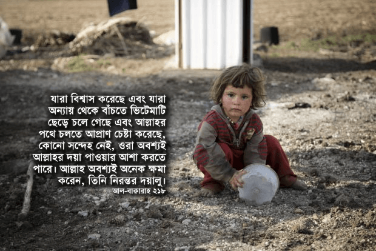

অন্যায় থেকে বাঁচার জন্য প্রেক্ষাপট অনুসারে ইসলামে দুটো পথ রয়েছে— ১) অন্যায়ের বিরুদ্ধে জিহাদ করা, অথবা ২) অন্যায় থেকে সরে যাওয়া। যখন মুসলিমরা কোনো দেশে বা এলাকায় সংখ্যালঘু বা প্রতিপক্ষের তুলনায় এতটাই দুর্বল যে, কোনো ধরনের সশস্ত্র প্রতিরোধ করতে গেলে প্রতিপক্ষের আক্রমণে বিলুপ্ত হয়ে যাওয়া ছাড়া আর কিছু অর্জন হবে না, তখন তাদের হিজরত করে চলে যাওয়াটাই সবচেয়ে ভালো উপায়। এভাবে অনর্থক রক্তপাত হবে না, মুসলিমরা বেঁচে থেকে আল্লাহর ইবাদত করতে পারবে, অন্য জায়গায় গিয়ে ইসলামের প্রচারও করতে পারবে। এর সবচেয়ে বড় উদাহরণ ইসলামের ইতিহাসে প্রথম হিজরত, যেখানে রাসুল عليه السلام একদল মুসলিমকে মুশরিকদের অত্যাচার থেকে বাঁচাতে মক্কা থেকে আবিসিনিয়ায় হিজরত করে চলে যেতে বলেন। এধরনের হিজরতে কোনো অপমান নেই, এটি কোনো কাপুরুষের মতো কাজও নয়, বরং আল্লাহর কাছে এটি পুরোপুরি গ্রহণযোগ্য একটি কাজ—
যারা বিশ্বাস করেছে এবং যারা অন্যায় থেকে বাঁচতে ভিটেমাটি ছেড়ে চলে গেছে এবং আল্লাহর পথে চলতে আপ্রাণ চেষ্টা করেছে, কোনো সন্দেহ নেই, ওরা অবশ্যই আল্লাহর দয়া পাওয়ার আশা করতে পারে। আল্লাহ অবশ্যই অনেক ক্ষমা করেন, তিনি নিরন্তর দয়ালু। [আল-বাক্বারাহ ২১৮]
ইসলামিক পরিভাষায় হিজরত হচ্ছে অত্যাচার, অন্যায় থেকে বাঁচতে এবং অন্য মুসলিমদের সাথে যোগ দিতে ভিটেমাটি ছেড়ে অন্য কোথাও চলে যাওয়া। একইসাথে কোনো শিরক দুষ্ট জায়গা থেকে অন্য কোনো কম শিরক দুষ্ট জায়গা, যেখানে পাপ অপেক্ষাকৃত কম হয়, অবস্থা অপেক্ষাকৃত ভালো, মুসলিমদের জান-মালের নিরাপত্তা অপেক্ষাকৃত বেশি, সেখানে চলে যাওয়াও হিজরত।[৩৫৪]

মুসলিমরা কোনো একটি জায়গায় কী ধরনের নিরাপত্তা, সুযোগ-সুবিধা ভোগ করে, সেখানে ইসলামের শাসন কতখানি রয়েছে, সেই মুসলিমদের সাথে অমুসলিমদের কী ধরনের চুক্তি রয়েছে ইত্যাদির উপর ভিত্তি করে বিভিন্ন মতবাদের অনুসারী আলেমরা পৃথিবীর এলাকাগুলোকে বিভিন্ন ভাগে ভাগ করেছেন। হানাফি, মালিকি, শাফিই, হাম্বালি, সালাফি মতবাদের আলেমরা নিচের এই প্রকারভেদগুলো দেখিয়েছেন, যার মোটামুটি একটি বাংলা ধারণা দেওয়া হলো, যদিও এর একটির সংজ্ঞাও এত সরল নয়—
- ১) দার উল ইসলাম دار الإسلام — মূলত ইসলামী আইন শাসিত স্থান।
- ২) দার উল কুফর دار الكفر — মূলত কুফর শাসিত স্থান।
- ৩) দার উল হারব دار الحرب — যে জায়গা বা দেশের সাথে মুসলিমরা যুদ্ধে জড়িত বা যুদ্ধ করতে বাধ্য।
- ৪) দার উল আমন دار الأمن — মুসলিমদের জান-মালের নিরাপত্তা, সীমিত ধর্মীয় স্বাধীনতা আছে এমন স্থান।
- ৫) দার উল ‘আহদ دار العهد — মুসলিমদের সাথে অমুসলিমদের সন্ধি, শান্তি চুক্তি আছে এমন স্থান।
- ৬) দার মুরাক্কাবাহ دار مركبة — যেই এলাকায় দার উল ইসলাম এবং দার উল হারবের বৈশিষ্ট্য একইসাথে বিদ্যমান।
একটি মুসলিম দেশের উদাহরণ
একটি কাল্পনিক দেশের উদাহরণ দেই। সেই দেশে মুসলিম জনসংখ্যা সংখ্যাগরিষ্ঠ হলেও, সে দেশের ধর্মপ্রাণ মুসলিমদের জান-মালের নিরাপত্তা নেই। আইন শৃঙ্খলা বাহিনী যখন তখন দাড়ি-টুপিওলা মানুষদেরকে অত্যাচার করছে। মাদ্রাসার ছাত্রদেরকে মেরে ফেলা হচ্ছে, কোনো বিচার হচ্ছে না, খবরের কাগজেও শিরনাম হচ্ছে না। ধর্মপ্রাণ মুসলিমদেরকে ধরে নিয়ে যাওয়া হচ্ছে, কারণ তাদের কাছে কুর’আন এবং সাহিহ বুখারি নামের দুটো ভয়ঙ্কর ‘জিহাদি বই’ পাওয়া গেছে। মুসলিমরা আর স্বাধীনভাবে ইসলামিক কনফারেন্স করতে পারছেন না, অনুমতি দেওয়া হচ্ছে না। একের পর এক ইসলামী প্রতিষ্ঠান বন্ধ করে দেওয়া হচ্ছে। মুসলিমরা একসাথে হয়ে শান্তিপূর্ণ আন্দোলন করতে গেলে তাদেরকে দমিয়ে ফেলা হচ্ছে। আইন শৃঙ্খলা বাহিনীর কাছ থেকে নিরাপত্তা পাওয়ার বদলে সাধারণ মানুষ তাদের ভয়ে তটস্থ। দেশের উচু পর্যায়ের সরকারি কর্মকর্তারা দুর্নীতি করে দেশকে লুটেপুটে খাচ্ছে। সারা দেশের মানুষকে কোটি কোটি ডলারের দেনায় জড়িয়ে দিচ্ছে, যেই দেনা শোধ করতে গিয়ে কয়েক প্রজন্ম ফকির হয়ে যাবে। কারো সাধ্য নেই তাদেরকে অন্যায়ের জন্য আদালতে হাজির করার। সারা দেশে সুদ, ঘুষ, ব্যাভিচার, হারাম বিনোদন এবং ব্যবসার ছড়াছড়ি। দেশের লক্ষ লক্ষ ‘মুসলিম’ সবচেয়ে বড় কুফরি এবং শিরকে লিপ্ত: তারা এক পিরকে আল্লাহ মনে করে। দেশের বাকি কোটি কোটি মুসলিম এই সর্বোচ্চ পর্যায়ের শিরকের বিরুদ্ধে গলাবাজি করা ছাড়া আর কিছুই করছে না —এই রকম একটি দেশ কি দার উল ইসলাম, যেখানে অন্যান্য অমুসলিম দেশ থেকে আরও বেশি করে মুসলিমরা এসে থাকবে, নাকি দার উল কুফর, যেখান থেকে মুসলিমদের হিজরত করে অন্য কোনো দেশে চলে যেতে হবে, নাকি দার উল হারব, যেখানে অন্যায়ের বিরুদ্ধে জিহাদ মুসলিমদের উপর ফরজ দায়িত্ব হয়ে গেছে —এনিয়ে হানাফি, শাফাই, মালিকি, হাম্বালি, সালাফি ইত্যাদি মতবাদে একাধিক মত দেওয়া হয়েছে, যা নিয়ে বিস্তারিত আলোচনা পরে করা হলো।
একটি অমুসলিম দেশের উদাহরণ
আরেকটি কাল্পনিক দেশের উদাহরণ দেই। সেই দেশে অমুসলিমরা সংখ্যাগরিষ্ঠ, তবে লক্ষ লক্ষ মুসলিমরা কয়েক প্রজন্ম ধরে সেখানে আছেন। সেখানে মুসলিমদের জান-মালের নিরাপত্তা আছে, তাদের যথেষ্ট ধর্মীয় স্বাধীনতা আছে। মুসলিমরা একের পর এক মসজিদ তৈরি করছেন, ইসলামী স্কুল, কলেজ, ইউনিভারসিটি তৈরি করছেন। বড় বড় ইউনিভার্সিটি সেখানে রয়েছে, যেখানে সারা পৃথিবী থেকে মুসলিমরা এসে ইসলামিক শিক্ষায় মাস্টার্স, পিএইচডি করছেন। বিশাল পরিসরে ইসলামিক প্রকাশনা চলছে, একের পর এক ইসলামিক লাইব্রেরি তৈরি হচ্ছে। প্রায় প্রত্যেক সপ্তাহেই ব্যাপক পরিসরে আয়োজন করে মধ্যপ্রাচ্য সহ সারা পৃথিবী থেকে আসা বিখ্যাত আলেমদের কনফারেন্স হচ্ছে। কিছু অমুসলিমরা ভয়ে আছে যে, দেশটা না আবার মুসলিমদের হাতে চলে যায়। সেই দেশে আইন শৃঙ্খলা অত্যন্ত কঠিন। কোনো সরকারি কাজে ঘুষ দিতে হয় না। মন্ত্রীকে দুর্নীতির অভিযোগে আদালতে হাজির করে শাস্তি দেওয়া হয়। মুসলিমদের বিরুদ্ধে অন্যায় হলে মামলা করে আদালতে ন্যায় বিচার পাওয়া যায়, এমনকি সেটা সরকারের বিরুদ্ধে হলেও। পৃথিবীর ‘মুসলিম’ দেশগুলো থেকে পালিয়ে আসা রেফুজিরা সেই দেশে এসে আশ্রয় নেয়। —এই রকম একটি দেশ কি দার উল ইসলাম বা আমন, যেখানে মুসলিমরা জান-মালের নিরাপত্তার জন্য এসে থেকে সেখানকার মুসলিমদের আরও শক্তিশালী করবে, নাকি দার উল কুফর, যেখান থেকে মুসলিমদের হিজরত করে অন্য কোনো দেশে চলে যেতে হবে, নাকি দার উল হারব, যেই দেশের বিরুদ্ধে জিহাদ মুসলিমদের উপর ফরজ দায়িত্ব হয়ে গেছে —এনিয়ে হানাফি, শাফাই, মালিকি, হাম্বালি, সালাফি ইত্যাদি মতবাদে একাধিক মত দেওয়া হয়েছে, যা নিয়ে বিস্তারিত আলোচনা পরে করা হলো।
আজকে প্রেক্ষাপট যে আমূল বদলে গেছে, এবং আগেকার ফাতওয়াগুলো যে নতুন করে খতিয়ে দেখার জন্য আজকের যুগের সকল মাযহাবের আলেমরাই বলছেন, তার একটি উদাহরণ হলো আজকে একজন যদি কিতাল বা যুদ্ধে যোগ দিতে যায়, তাহলে সে কীভাবে সেটা করবে? আগেকার যুগে কেউ যদি যুদ্ধে যোগ দিতে চাইত, তাহলে সে তার জিনিসপত্র নিয়ে একটা ঘোড়া বা উটে চড়ে যুদ্ধক্ষেত্রের দিকে রওনা দিয়ে দিত। তাকে কোনো ভিসা করতে হতো না, কোনো ইমিগ্রশন পার করতে হতো না। কিন্তু আজকে যদি কেউ কোনো দেশে গিয়ে মুসলিমদের পক্ষে যুদ্ধে যোগ দিতে চায়, তাহলে তাকে প্রথমে ভিসা এপ্লিকেশনে ‘ভ্রমণের উদ্দেশ্য’ জায়গায় মিথ্যা কথা লিখতে হবে, ‘বেড়াতে যাচ্ছি’। বাংলাদেশ ইমিগ্রেশন পার হওয়ার সময় যখন তাকে জিগ্যেস করা হবে, ‘কোথায় যান? কী করবেন?’ তখন সে মিথ্যা সাক্ষী দেবে, ‘তুরস্ক যাই, আত্মীয়ের কাছে বেড়াতে’। তুরস্কের ইমিগ্রশনে গিয়ে তাকে যখন জিগ্যেস করা হবে, ‘কেন এসেছেন? কী করবেন? কত দিন থাকবেন?’ তখন সে আবারো মিথ্যা সাক্ষী দেবে, ‘বেড়াতে এসেছি। থাকবো বন্ধুর সাথে। দুই সপ্তাহ’। এভাবে নানা ছল চাতুরি করে, শত মানুষের সাথে প্রতারণা করে, মিথ্যা সাক্ষী দিয়ে সে জিহাদের মতো একটা পবিত্র কাজ করতে যাবে। এখন কেউ যদি দাবি করে যে, জিহাদে যাওয়ার জন্য এই সব মিথ্যা, প্রতারণা হালাল, তার মানে সে এই মূলনীতি সমর্থন করছে যে, একটি হালাল কাজের জন্য প্রয়োজনে একাধিক হারাম কাজ করা যাবে। কুর’আন, হাদিস-এর সম্পূর্ণ পরিপন্থি এই মূলনীতি যদি সত্যি হয়, তাহলে ঘুষ খেয়ে হাজ্জ করতে যাওয়াটাও তখন হালাল হয়ে যাবে, সুদের লোণ নিয়ে মসজিদ বানানো হালাল হয়ে যাবে, চুরি করে এতিমখানা চালানো হালাল হয়ে যাবে। — একারণেই আজকের প্রেক্ষাপট বিবেচনা না করে কেউ যদি হাজার বছর আগের প্রেক্ষাপট অনুসারে দেওয়া ফাতওয়া ব্যবহার করতে যায়, তার মানে সে দাবি করছে যে, গত শত বছরে যে শত শত আলেমরা ইজতিহাদ করেছেন, তারা সব ভণ্ড, তাদের ইজতিহাদ বাতিল।
দার উল ইসলাম বা দার উল কুফর কী?
প্রথমত, দার উল ইসলাম বলতে আসলে কী বোঝায়, আর দার উল কুফরই বা আসলে কী, এগুলোর সংজ্ঞা বিভিন্ন মতবাদের আলেমরা বিভিন্নভাবে দিয়েছেন। একইসাথে বিভিন্ন ধরনের ‘দার’-এ মুসলিমদের জন্য থাকা বৈধ, কি বৈধ না, এনিয়ে বিভিন্ন মতবাদে বিভিন্ন নিয়ম দেওয়া হয়েছে। এনিয়ে বিস্তারিত পরে আলোচনা করা হলো। আমাদেরকে মনে রাখতে হবে, এই দার-গুলোর সংজ্ঞা একাধিক মতবাদ একবাক্যে মেনে নেয়নি, তাদের মধ্যে যথেষ্ট সুক্ষ মতভেদ রয়েছে। সেই মতভেদগুলো যদি আমরা উপেক্ষা করে পুরো পৃথিবীকে সাদা-কালো মনে করা শুরু করি, তাহলে অজস্র প্রশ্নের কোনো উত্তর দেওয়া যাবে না। একইসাথে আমরা দেখতে পাই: একই মতবাদের অনুসারী আলেমদের ভেতরেও দার উল ইসলাম এবং দার উল হারবের সংজ্ঞা নিয়ে মতভেদ হয়েছে, এবং পরবর্তী প্রজন্মের আলেমরা পূর্বের প্রজন্মের আলেমদের মতকে পরিমার্জন করেছেন প্রেক্ষাপটের পরিবর্তনকে বিবেচনা করে।
আমাদের মনে রাখতে হবে, দার উল ইসলাম, দার উল কুফর ইত্যাদির সংজ্ঞা কোনোটাই কুর’আন বা হাদিসে নেই। এগুলো সবই বিভিন্ন প্রসিদ্ধ আলেমদের ইজতিহাদ অর্থাৎ নিজেদের গবেষণা থেকে পৌঁছান সিদ্ধান্তের উপর ভিত্তি করে উপস্থাপন করা। একই সাথে এটাও মনে রাখতে হবে যে, এই ইজতিহাদ তারা করেছেন তাদের সময়কার প্রেক্ষাপট অনুসারে। একইভাবে ‘দার’ বলতে যে দেশ বোঝায়, সেটাও নির্দিষ্ট নয়। ‘দার’ কোনো শহর, কোনো এলাকা, এমনকি কারো বাড়িও হতে পারে।[৩৫১]
দ্বিতীয়ত, ‘দার’-এর প্রকারভেদগুলোর সংজ্ঞা যুগে যুগে পরিমার্জন করা হয়েছে প্রেক্ষাপটের পরিবর্তনের সাথে সাথে। যেমন কয়েক’শ বছর আগেও আজকের যুগের মতো নির্দিষ্ট সীমানার দেশ বলে কিছু ছিল না। কোনো রাজ্যের রাজা যুদ্ধ করে যত এলাকা দখল করতে পারতো, সেটাই হয়ে যেত তার রাজ্য। তখন কোনো সার্বভৌম রাষ্ট্র ছিল না, যাকে আমরা আজকে সহজ ভাষায় দেশ বলি। কয়েক’শ বছর আগেও ভারতের কোনো রাজা রাজশাহি আক্রমণ করে দখল করে সেটাকে ভারত রাজ্যের অংশ বানিয়ে ফেলতে পারতো। আজকে সেটা সম্ভব নয়। জাতিসংঘের মাধম্যে দেশগুলোর মধ্যে নির্দিষ্ট সীমানা সহ নানা ব্যাপারে সন্ধি হয়েছে, যা সব মেম্বার দেশ মেনে চলে (ইসরাইল ছাড়া)। আগে লিখিত সংবিধান এবং আইন অনুসারে বেশিরভাগ দেশ পরিচালনা হতো না। তাই আগের যুগের প্রেক্ষাপট অনুসারে হানাফি, মালিকি, শাফিই, হাম্বালি আলেমরা যে ফাতাওয়া দিয়ে গেছেন, সেটা সেই যুগে প্রযোজ্য ছিল। আজকের যুগের সেই মাযহাবের অনুসারী আলেমরাই তাদের পূর্বসূরিদের ফাতয়াগুলোকে পরিমার্জন করেছেন পরিবর্তিত প্রেক্ষাপট অনুসারে।
দার উল আমন
ইসলামের ইতিহাসে প্রথম হিজরত হয়েছিল দার উল কুফর-মক্কা থেকে দার উল আমন-আবিসিনিয়াতে। আবিসিনিয়ার রাজা একজন খ্রিস্টান রাজা ছিলেন, যিনি হিজরত করে আসা মুসলিম দলকে সানন্দে অনুমতি দিয়েছিলেন আবিসিনিয়ায় থাকার জন্য এবং মুসলিমরা সীমিত ধর্মীয় স্বাধীনতা পেয়েছিলেন। এই সংজ্ঞা অনুসারে আজকের যুগে দার উল আমন হচ্ছে ওই সব অমুসলিম প্রধান দেশ, যেখানে মুসলিমরা আবিসিনিয়ার মতো জান-মালের নিরাপত্তা পায়, সীমিত ধর্মীয় স্বাধীনতা উপভোগ করে।[৩৫০] আজকে কেউ যদি দাবি করে যে, দার উল ইসলাম আর দার উল হারব বা কুফর ছাড়া আর কোনো প্রকারভেদ নেই, তাহলে তাদেরই সংজ্ঞা অনুসারে আবিসিনিয়া হয়ে যাবে দারুল ইসলাম, যার মানে আজকে আবিসিনিয়ার মতো সব অমুসলিম দেশ, যেখানে মুসলিমরা শান্তিতে আছে, ধর্মীয় স্বাধীনতা পাচ্ছে, তার সবই দার উল ইসলাম। না হলে তাদের সংজ্ঞা অনুদারে আবিসিনিয়া ছিল দারুল কুফর বা হারব এবং মুসলিমরা সেখানে হিজরত করে বিরাট পাপ করেছেন! সুতরাং আমরা দেখতে পাই, যারা পৃথিবীকে দার উল ইসলাম, না হয় দার উল কুফর / হারব — সাদা-কালো এই দুই ভাগে ভাগ করছেন, তারা সাহাবীদের ইতিহাস উপেক্ষা করছেন।
দার মুরাক্কাবাহ
আরেকটি উদাহরণ হলো: ইবন তাইমিয়্যাহকে জিগ্যেস করা হয়েছিল মারদেন কি দার উল হারব, নাকি দার উল সিল্ম دار السلم। তাকে জিগ্যেস করা হয়েছিল যে, সেখানকার মুসলিমরা কি সেই এলাকা ছেড়ে অন্য কোনো দার উল ইসলামে চলে যেতে বাধ্য কিনা। তিনি উত্তরে বলেন, সেটাকে দার উল সিল্ম বা দার উল হারব কোনোটাই বলা যাবে না, কারণ এর মধ্যে দুটোর বৈশিষ্ট্যই বিদ্যমান। একে দার মুরাক্কাবাহ دار مركبة প্রকারভেদ করতে হবে, যেখানে মুসলিমরা ইসলাম মেনে চলতে পারে এবং অমুসলিমরা তাদের ধর্ম মেনে চলে। আল জুদাই’ এ থেকে যুক্তি দেখান যে, যেই সব এলাকায় মুসলিমরা ইসলাম মেনে বাস করতে পারে, সেই সব এলাকাকে কোনোভাবেই দার উল হারব বলা যাবে না, যেখানে জিহাদ-কিতাল করতে মুসলিমরা বাধ্য।[৩৫১]
হানাফি মত
হানাফি ক্বাদি আল-কিস্কানি এর মত অনুসারে কোনো দেশে বা জায়গায় কত মুসলিম বাস করছে, তাতে কিছু যায় আসে না। আসল শর্ত হচ্ছে সেখানে মুসলিমদের নিরাপত্তা এবং ভয় কতখানি। যদি মুসলিমরা কোনো জায়গায় ভয়ে থাকে এবং জান-মালের নিরাপত্তা না থাকে, তাহলে সেটা হবে দার উল কুফর। আর যদি জান-মালের নিরাপত্তা থাকে এবং মুসলিমরা ভয়ে না থাকে, তাহলে সেটা দার উল ইসলাম। তবে আরেকজন হানাফি আলেম আল-সারখাসি অনুসারে যে জায়গা মুসলিমদের অধিনে রয়েছে, সেটাই দার উল ইসলাম, যে জায়গা নেই, সেটা দার উল কুফর। আরেক আলেম আল-শাইবানি মত অনুসারে ইসলামের শাসনও থাকতে হবে, একইসাথে মুসলিমদের নিরাপত্তা থাকতে হবে, তাহলেই সেটা দার উল ইসলাম হবে। এর একটিও বাদ থাকা যাবে না।[৩৫১]
মালিকি মত
মালিকি আলেমরা দার উল ইসলাম সেটাকেই বলেছেন, যেখানে মুসলিমরা তাদের শত্রুদের ভয়ে ভীত নয়। তাদের মতে দার উল হারব হচ্ছে এমন জায়গা, যেখানে মুসলিমরা তাদের শত্রুদের ভয়ে ভীত। সেই জায়গা একটি দার উল ইসলামই হোক, আর দার উল কুফরই হোক না কেন। যেমন, আল-আদায়ি’র মত অনুসারে দার উল হারব হবে এমন একটি জায়গা, যেখানে মুসলিমরা আইন শৃঙ্খলা বাহিনীর দ্বারা আক্রমনের শিকার হচ্ছে, যেখানে মুসলিমদের নিরাপত্তা নেই, যদিও কিনা সেটা একটি দার উল ইসলামের ভেতরে একটি জায়গা। একইভাবে দার উল কুফর মানেই দার উল হারব নয়, যদি না সেই দার উল কুফর মুসলিমদেরকে আক্রমণ না করে।[৩৫১]
হাম্বালি মত
ইবন মুফলিহ অনুসারে শুধুমাত্র ইসলামী আইনের শাসন থাকলেই সেটা দার উল ইসলাম, আর না থাকলে সেটা দার উল কুফর, আর কোনো শর্ত নেই।[৩৫১] অন্যদিকে অন্যতম হাম্বালি ফিকহ আলেম ইবন কুদামাহ, তার ফিকহের এনসাইক্লোপিডিয়া আল-মুগনিতে বলেন, কাফির দেশ থেকে মুসলিমদের চলে যাওয়াটা মুস্তাহাব বা পছন্দনীয়, কারণ তাহলে সে কাফিরদের বিরুদ্ধে জিহাদে অংশ নিতে পারবে এবং সে মুসলিমদের সংখ্যা বৃদ্ধি করবে। কিন্তু সে যদি প্রকাশ্যে তার ধর্ম পালন করতে পারে, ফিতনাহ থেকে নিজেকে নিরাপদ রাখতে পারে, মানুষকে আল্লাহর পথে ডাকতে পারে, মুসলিমদেরকে ইসলাম শেখাতে পারে, তাহলে সে সেখানে থাকতে পারবে, হিজরত করতে হবে না।[৩৫২]
সালাফি মত
সালাফি মত অনুসারে পৃথিবীর এলাকাগুলো দুই ভাগ, হয় দার উল ইসলাম, না হয় দার উল কুফর। কিন্তু শায়খ ইবন উছাইমিন বলেন যে, মুসলিম দেশের যেমন নানা প্রকারভেদ রয়েছে ইসলামী আইনের কতখানি প্রয়োগ হয় তার উপর ভিত্তি করে, সেরকম কাফির দেশের নানা প্রকারভেদ রয়েছে এবং সেই সব দেশে স্থায়িভাবে থাকা, না থাকা নিয়ে ভিন্ন নিয়ম রয়েছে। সব কাফির দেশকে এক করে দেখলে হবে না। আজকের যুগে এটি একটি বিরাট সমস্যা যে, মুসলিমরা যদি কাফির দেশ থেকে তাদের দেশে ফিরে যায়, তাহলে তারা তাদের ধর্মের জন্য আক্রমণের শিকার হবে, যেখানে তারা আজকে কাফির দেশে নিরাপদে আছে। আমরা যদি বলি কাফির দেশে বাস করা হারাম, তাহলে সেই ইসলামিক খিলাফা কোথায়, যেখানে আমরা তাদেরকে যেতে বলবো, যেখানে তাদেরকে গ্রহণ করা হবে, তারা শান্তিতে থাকতে পারবে?[৩৫৩]
জাকারিয়া আল-আনসারি বলেন, কাফির দেশ থেকে মুসলিমরা হিজরত করে যেতে বাধ্য, যদি তারা সেখানে প্রকাশ্যে ধর্ম পালন করতে না পারে।[৩৫৩]
সৌদি আরবের শারিয়াহ কমিটির ফাতয়া (১২/৫০) -এ বলা আছে, একজন মুসলিম একটি মুশরিক দেশ থেকে আরেকটি মুশরিক দেশে যেতে পারবে, যেটা অপেক্ষাকৃত কম খারাপ দেশ, যেখানে মুসলিমদের উপর বিপদ কম। যেভাবে কিনা মুসলিমরা একসময় মক্কা থেকে আবিসিনিয়াতে হিজরত করেছিল।[৩৫৩]
শাফিই মত
ইমাম শাফিই বলেন যে, পৃথিবীকে শুধু দার উল ইসলাম এবং দার উল হারব, এভাবে সাদাকালো ভাবে দেখলে হবে না। তিনি দার উল ‘আহদ এই প্রকারভেদ করেন। দার উল ‘আহদ হচ্ছে সেই সব অমুসলিম শাসিত দেশ, যাদের সাথে মুসলিম শাসিত দেশের শান্তি চুক্তি আছে। ইউসুফ আল-কারাদায়ি এবং আবু যাহ্রা, দুজন মিশরিয় আলেম, দেখান যে, আজকে পৃথিবীতে দেশ বা সার্বভৌম রাষ্ট্র বলে যে ধারণা রয়েছে, সেই ধারণা আগে ছিল না। আজকের রাজনৈতিক প্রেক্ষাপট ২০০ বছর আগেকার প্রেক্ষাপট থেকে সম্পূর্ণ ভিন্ন। আজকে জাতিসংঘের মাধ্যমে দেশগুলোর মধ্যে শান্তি চুক্তি আছে, নির্দিষ্ট সীমানা রয়েছে। আগেকার অমুসলিম দেশের রাজাদের মতো যে যখন খুশি গিয়ে যুদ্ধ করে রাজত্ব বাড়াতে পারে না। একারণে অমুসলিম দেশগুলোকে আর দার উল হারব বলা যাবে না, দার উল ‘আহদ বলতে হবে, কারণ আগেকার যুগের আলেমরা যে সব প্রেক্ষাপটের উপর ভিত্তি করে দার উল ইসলাম, দার উল হারব ইত্যাদি সংজ্ঞা দিয়েছিলেন, সেই সব প্রেক্ষাপট আজকে প্রযোজ্য নয়। [৩৫১]
অন্যদিকে একাধিক শাফিই ক্বাদি মত অনুসারে কোনো দার উল ইসলাম এলাকা দার উল হারব-এ পরিণত হবে, যদি সেটা অমুসলিমদের শাসনে চলে যায়। কিন্তু এই সংজ্ঞা অনুসারে ইরাক, ফিলিস্তিন, আফগানিস্থান নিয়ে সমস্যা তৈরি হয় এবং সেখানে মুসলিমদের বাস করা নিয়ে প্রশ্ন চলে আসে, কারণ মুসলিমদের দার উল হারবে বাস করা অবৈধ এবং সেখান থেকে তারা হিজরত করে যেতে বাধ্য। তবে হানাফি, মালিকি আলেমদের মতে সেটা দার উল ইসলামই থাকবে, কারণ সেখানে মুসলিমরা বাস করছে, আযানও দেওয়া হচ্ছে।[৩৫১]
কিন্তু আল-মারুদি, যিনি একজন শাফিই আলেম, তিনি বলেছেন, দার উল হারবে যদি মুসলিমরা বাস করে স্বাধীনভাবে ইসলাম মেনে চলতে পারে, তাহলে তারা সেখানেই থাকবে এবং নিজেদের মধ্যে ইসলাম ধরে রাখবে। তাহলে সেটা দার উল হারব থেকে দার উল ইসলামে পরিণত হবে! কিন্তু মুসলিমরা যদি সে জায়গা ছেড়ে চলে যায়, তাহলে সেটা দার উল হারব হয়ে যাবে।[৩৫১]
অন্যান্য মত
পরবর্তী প্রজন্মের আলেমরা নানা ভাবে দার উল ইসলাম, দার উল হারব, দার উল কুফর ইত্যাদির সংজ্ঞা দিয়েছেন। যেমন, তাফসির লেখক সৈয়দ কুতব এর মত হলো: পুরো পৃথিবী শুধুমাত্র দুটো ভাগে বিভক্ত, হয় দার উল ইসলাম, না হয় দার উল হারব। আর কোনো ভাগ তার কাছে গ্রহণযোগ্য নয়। যে সব দেশে ইসলামের শারিয়াহ অনুসারে শাসন হয় না, সেটাই দার উল হারব, তাদের সাথেই আমাদের জিহাদ, কিতাল করতে হবে, সেটা মুসলিম অধ্যুষিত দেশ হোক, আর না হোক। এই চরম্পন্থি মত ব্যবহার করে অনেক সন্ত্রাসী দল মুসলিম প্রধান দেশেও আক্রমণ করা সমর্থন করেছে।
সাবধান!
আমাদেরকে মনে রাখতে হবে যে, কোনো এক তাফসির লেখক বা ইমাম যদি কোনো দেশকে দার উল হারব বা দার উল কুফর বলে ঘোষণা দিয়ে সব মুসলিমদেরকে সেখান থেকে চলে যেতে বলেন, সেখানে মুসলিমদের জিহাদ করতে বলেন, তাহলেই সেটা মানতে মুসলিমরা বাধ্য নয়। এই ব্যাপারে সেই যুগের বড় বড় আলেমদের মধ্যে সমর্থন আছে কিনা দেখতে হবে। কোনো এক পক্ষের আলেমদের কথায় তলোয়ার নিয়ে ঝাপিয়ে পড়ে খুনাখুনি শুরু করে দিলে মুসলিম উম্মাহর আরও বেশি ক্ষতি ছাড়া আর কিছু অর্জন হবে না। বুদ্ধিমান মুসলিমরা একাধিক পক্ষের আলেমদের ব্যাখ্যা শুনে দেখবেন এবং নিজের বিবেক-বুদ্ধি খাঁটিয়ে নিজেকে প্রশ্ন করবেন: কেন তিনি কোনো একটি পক্ষের ব্যাখ্যা মেনে নিচ্ছেন? মেনে নেওয়ার পেছনে কি তার বিবেক-বুদ্ধি কাজ করছে, নাকি কারো প্রতি তার ক্রোধ, অহঙ্কার, ঘৃণা অথবা নিজের লোভ, কামনা, বাসনা কাজ করছে? কারণ কিয়ামতের দিন আল্লাহর সামনে দাড়িয়ে আমাদের প্রত্যেককে সেই উত্তরটাই দিতে হবে।
সূত্র:
- [১] বাইয়িনাহ এর কু’রআনের তাফসীর।
- [২] ম্যাসেজ অফ দা কু’রআন — মুহাম্মাদ আসাদ।
- [৩] তাফহিমুল কু’রআন — মাওলানা মাওদুদি।
- [৪] মা’রিফুল কু’রআন — মুফতি শাফি উসমানী।
- [৫] মুহাম্মাদ মোহার আলি — A Word for Word Meaning of The Quran
- [৬] সৈয়দ কুতব — In the Shade of the Quran
- [৭] তাদাব্বুরে কু’রআন – আমিন আহসান ইসলাহি।
- [৮] তাফসিরে তাওযীহুল কু’রআন — মুফতি তাক্বি উসমানী।
- [৯] বায়ান আল কু’রআন — ড: ইসরার আহমেদ।
- [১০] তাফসীর উল কু’রআন — মাওলানা আব্দুল মাজিদ দারিয়াবাদি
- [১১] কু’রআন তাফসীর — আব্দুর রাহিম আস-সারানবি
- [১২] আত-তাবারি-এর তাফসীরের অনুবাদ।
- [১৩] তাফসির ইবন আব্বাস।
- [১৪] তাফসির আল কুরতুবি।
- [১৫] তাফসির আল জালালাইন।
- [১৬] লুঘাতুল কুরআন — গুলাম আহমেদ পারভেজ।
- [৩৫০] Archive.org,. (2016). Qamoos Ul Fiqh Vol 3 of 5 By Maulana Khalid Saifullah Rahmani. Retrieved 20 January 2016, from https://archive.org/stream/QamoosUlFiqhVol3/Qamoos%20Ul%20Fiqh%20Vol%203%20By%20Maulana%20Khalid%20Saifullah%20Rahmani#page/n397/mode/2up
- [৩৫১] [351] Abdou Selim, Ali Shehata. “The Concept of Coexistence in Islamic Primary Sources” Retrieved 20 January 2016, from https://books.google.co.uk/books?id=wJ_zBgAAQBAJ&pg=PA145&lpg=PA145&dq=al-Mawardi+dar+al+ahd&source=bl&ots=1rRfn8P0EV&sig=zcdq_n2ZLCqYadZ54-uBe0jLxxU&hl=en&sa=X&ved=0ahUKEwjP56SixrjKAhWBORQKHZsdDocQ6AEIJzAB#v=onepage&q=al-Mawardi%20dar%20al%20ahd&f=false
- [৩৫২] Islamqa.info,. (2016). Is it obligatory for those who embrace Islam in kaafir lands to migrate (hijrah)? – islamqa.info. Retrieved 21 January 2016, from https://islamqa.info/en/47672
- [৩৫৩] Islamqa.info,. (2016). Can Muslims settle in kaafir countries for the sake of a better life? – islamqa.info. Retrieved 21 January 2016, from https://islamqa.info/en/13363
- [৩৫৪] Islamqa.info. (2016). What is hijrah? – islamqa.info. Retrieved 21 January 2016, from https://islamqa.info/en/7191